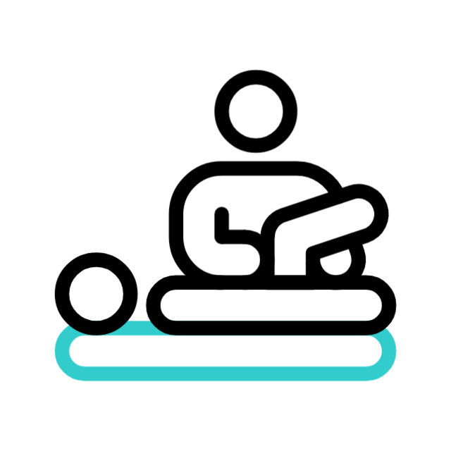
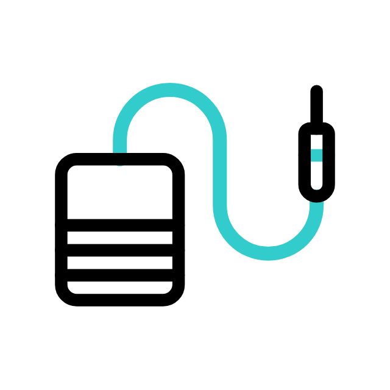

Anna Bárbara Carneiro Pozza
Fisioterapeuta
CREFITO-10/346771-F
-

-

- 
- 
Oi! me chamo Anna, nacida em 23/01/1998, seja bem-vindo(a)!
Formada desde 12/2021 na Universidade do Sul de Santa Catarina. Pós-graduada em Fisioterapia Cardiovascular na Faculdade Unyleya. Fui estudante de ballet na Escola do Teatro Bolshoi no Brasil de 2008 até 2014. Após iniciar a graduação, realizei curso de Ventosaterapia, Saúde do Trabalhador, Pilates completo, Eletrólise Percutânea Terapêutica, entre outros.